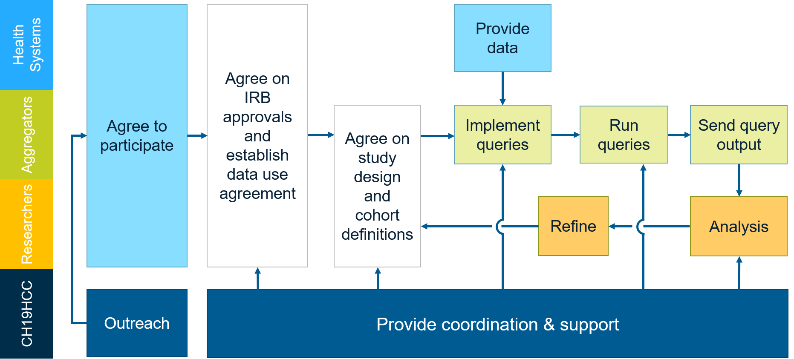

STUDIES
Roles
The COVID-19 Healthcare Coalition (C19HCC) is a private-sector led response that brings together healthcare organizations, technology firms, nonprofits, academia, and startups to preserve the healthcare delivery system and help protect U.S. populations. C19HCC convenes and facilitates the entire study process.
Researchers
With representatives from academia, health systems, electronic health record (EHR) vendors, and health analytics providers, researchers determine the study design and analyze data reported by Aggregators.
Aggregators
Aggregators are EHR vendors and health analytics providers who have patient-level data collected from one or more Health Systems. In some cases, the Aggregators and Health Systems can be one in the same.
Health Systems
Health Systems are the original source of patient-level data.
Study Configurations
The timeline or flow of the study is depicted below. When possible, existing data use agreements (DUAs) between the Aggregators and Health Systems have been utilized. Aggregators work with Researchers to standardize cohort definitions at a logical level. As data holders, the Aggregators know what data is available and the approximate size of proposed cohorts to assure any proposed cohorts are implementable. Once established, the cohort definitions are adapted by the Aggregators to their local terminology and data representations. The resulting queries are executed against the Aggregators' databases, without sharing patient-level data with Researchers. Results are returned as counts for each defined cohort.

Current Studies
Hydroxychloroquine
For patients with new COVID-19 infection, how does the addition of hydroxychloroquine (HCQ) affect the outcomes (1) severe disease (indicated by mechanical ventilation) and (2) inpatient death?
Remdesivir
For patients with new COVID-19 infection, how does the addition of redesivir (RDV) affect the outcomes (1) severe disease (indicated by mechanical ventilation) and (2) inpatient death?
Famotidine
For patients with new COVID-19 infection, how does the addition of famotidine (FMT) affect the outcomes (1) severe disease (indicated by mechanical ventilation) and (2) inpatient death?
Intravesical Bacille Calmette-Guerin
How does prior vaccination with bacille Calmette-Guerin (BCG) affect the infection with COVID-19?
Convalescent Serum
For patients with new COVID-19 infection, how does treatment with convalescent serum (CS) affect the outcomes (1) severe disease (indicated by mechanical ventilation) and (2) inpatient death?
Reinfection
For patients who have diagnosed as COVID-19 positive, how many patients have a positive test more than X days after the initial positive test?